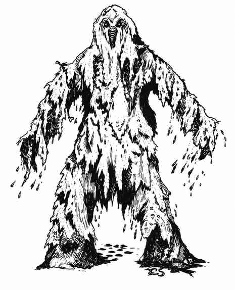

蹒跚怪 · Shambling Mound
 |
|
蹒跚怪又称“沼怪”，出没于阴沉沼泽或某些潮湿的地下区域。它们通过奇异的根须和卷须吞食任何活物，毫不畏惧地战斗，每轮用肢体挥击两次。若两次挥击都命中同一目标，目标会被缠住，并在 2–8 个战斗轮内被怪物的黏液窒息，除非先杀死蹒跚怪。
蹒跚怪的大脑位于身体中部，厚实的纤维层使其唯一要害难以贯穿；大多数命中造成的伤害很小（因此护甲等级为 0）。它湿润而黏滑，火焰对其无效；闪电会使它生长（增加 1 个生命骰）；寒冷因植物构造而至多造成一半伤害，甚至可能完全无效。所有武器只造成一半伤害；它能压扁身体，因此钝击效果很小。影响植物的法术对它有效，例如植物控制术和魅惑植物。蹒跚怪看起来像一堆腐烂植被，实际是有智慧的植物生命体，通常高 6–9 尺，底部周长约 6 尺，顶部约 2 尺。